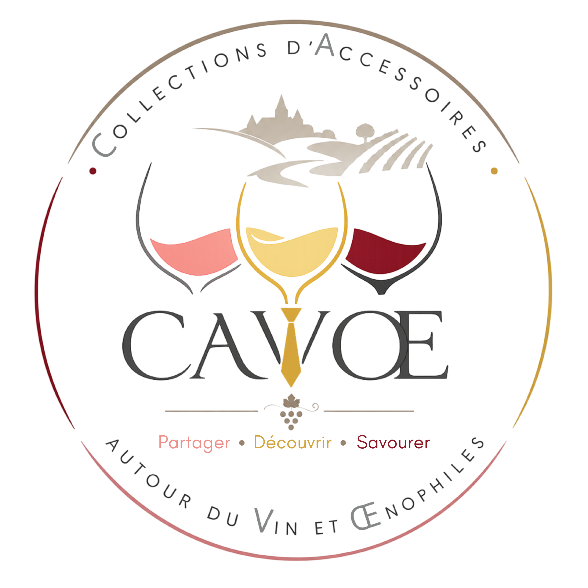

L'association
Collections d'accessoires autour du vin et œnophiles
TODO: mettre un texte sympa d'introduction
Faire découvrir le vin, les cépages, appellations...
Donner des clés de compréhension des méthodes de vinification, des accord mets et vins...
Echanger avec les membres autour de la passion du vin

Notre mission
Ce qui nous anime
- Créer des moments d'échange et de partage autour de la vigne, du vin et de leur évolution, au travers d'événements dédiés à cet univers.
- Présenter, grâce à des expositions d'accessoires liés au vin, comprenant tous types d'objets destinés à sa présentation, son service et sa dégustation.
- Proposer des animations œnologiques et des activités œnotouristiques ayant pour objectif de faire découvrir les différents cépages, les vignobles et les terroirs.
- Initier aux étapes de la dégustation et informer, de manière pédagogique, sur les accords mets et vins.
L'ambition est de transmettre la culture du vin, de valoriser les savoir-faire viticoles et de favoriser la découverte de cet univers auprès du plus grand nombre.
Aux origines
Notre histoire
CAVOE naît de la passion d'un autodidacte curieux, Pascal Liaigre. Au fil de ses lectures et de ses échanges avec des professionnels du vin, il devient un véritable puit de culture du sujet et rassemble une collection d'accessoires œnophiles variés.
En mai 2025, il partage cet univers lors d'une exposition de dix jours consacrée à sa collection. Son idée était simple : transmettre sa passion avec pédagogie et enthousiasme.
Depuis, l'association organise des rendez-vous thématiques et des soirées dégustation pour explorer cépages, terroirs et histoires de vignerons, dans un esprit d'échange et de découverte.